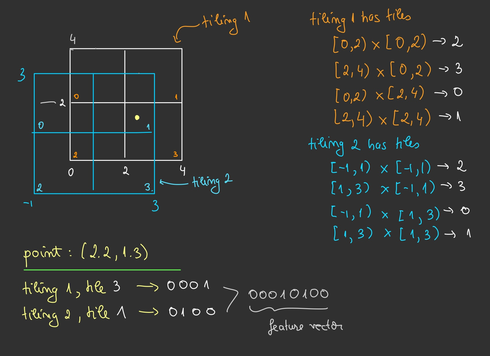

Tile coding is a technique used to represent multi-dimensional continuous spaces.
The space is covered by multiple overlapping tilings or grids. Tilings are offset from one another by a uniform amount in each dimension. Each tiling partition is a tile. A state is represented by the set of tiles it falls into across all tilings. This representation produces a sparse, binary feature vector, which is both memory-efficient and computationally efficient for moderate-dimensional problems.
The figure below illustrates the concept:

For practical implementations, see tilecoding and tile3.
Here are the main strengths and limitations of tile coding:
Advantages:
Disadvantages:
Consider the state-value function \(V(s_t, \mathbf{w})\) with feature vector \(\boldsymbol{\phi}(s_t)\).
It can be represented as a linear combination of features, as follows
For stochastic gradient descent (SGD), the update rule is
\[\mathbf{w}_{t+1} \leftarrow \mathbf{w}_t + \alpha(U_t - V(s_t, \mathbf{w}_t)) \boldsymbol{\phi}(s_t),\]where \(U_t\) is the target value and \(\alpha\) is the step size.
For temporal-difference (TD) learning, the update becomes
\[\mathbf{w}_{t+1} \leftarrow \mathbf{w}_t + \alpha(R_{t+1} + \gamma \mathbf{w}^\top \boldsymbol{\phi}(s_{t+1}) - \mathbf{w}^\top \boldsymbol{\phi}(s_t)) \boldsymbol{\phi}(s_t),\]where \(R_{t+1}\) is the reward at time \(t+1\), \(\gamma\) is the discount factor, and \(s_{t+1}\) is the next state.
Now consider SARSA, with an action-value function \(Q(s, a)\).
A natural choice of features is \(\boldsymbol{\phi}(s, a)\).
Suppose we have discrete actions \(a \in \{1, 2, \ldots, K\}\).
The action-value function can then be expressed as
and the full weight matrix \(\mathbf{w}\) has shape \(K \times n\).
Since \(\boldsymbol{\phi}(s)\) is a binary vector (and thus sparse), the action-value function can be computed as
\[Q(s, a)=\sum_{i \in \text { active tiles }} \mathbf{w}_{a, i} \quad \text { for all } a=1, \ldots, K.\]The greedy action is chosen as
\[a^*=\arg \max _{a \in\{1, \ldots, K\}} Q(s, a),\]Note: Always break ties randomly to avoid bias.
There’s actually a well-known connection between tile coding and how the brain may represent space. Here’s a link to a wikipedia page.
In summary, tile coding is a simple and efficient way to represent continuous spaces with sparse, binary feature vectors. However, this efficiency comes with limitations: the number of tiles increases with the dimensionality of the state space, which makes the method less practical for very high-dimensional problems.
[1] R. S. Sutton and A. G. Barto, “Reinforcement Learning: An Introduction,” MIT Press, 2018.